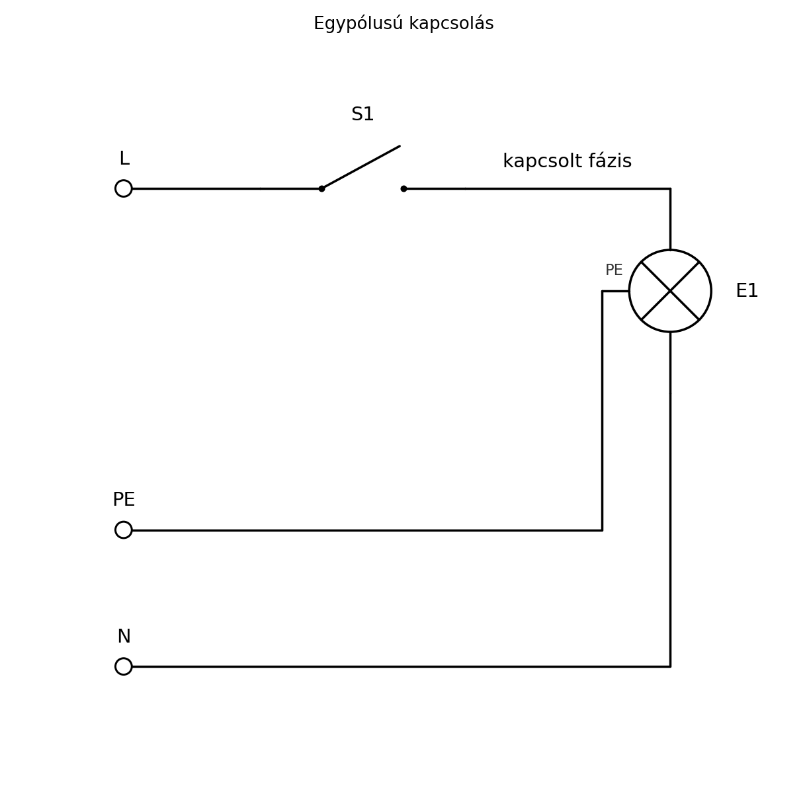
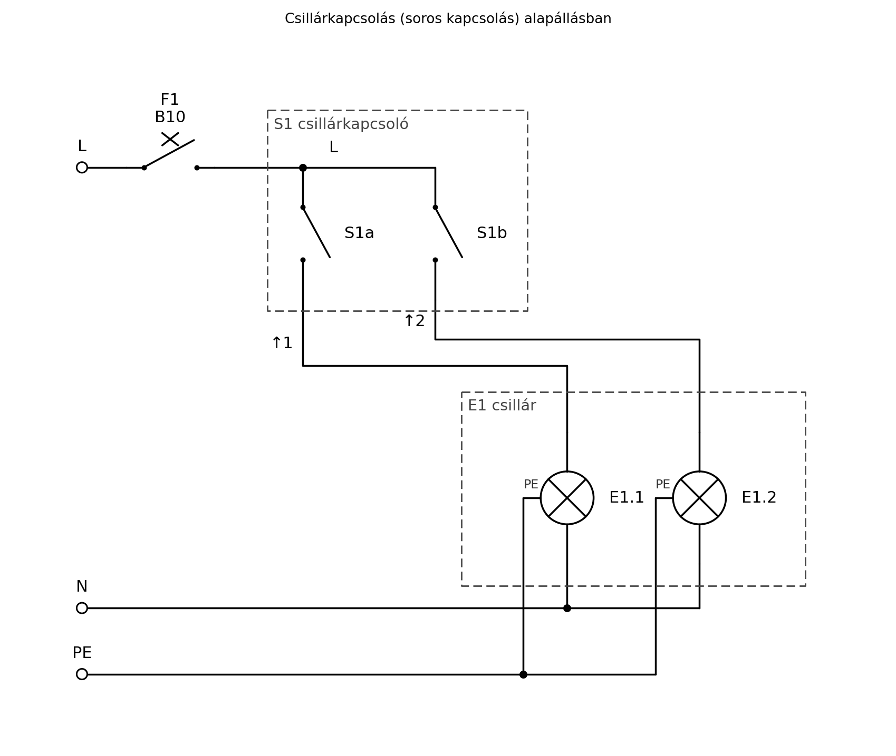

Egy lakásfelújítás során minden olyan helyiségben, ahol a belépőnek meg kell tudni gyújtania a villanyt, világítási áramkört kell építeni. Az egyik legegyszerűbb feladat egy szoba mennyezeti lámpája egyetlen ajtó melletti kapcsolóval. A következő szint már a hálószoba, ahol az ágyból és az ajtóból is szeretnénk kapcsolni, vagy éppen egy lépcsőház, ahol három emeletről is lehessen irányítani ugyanazt a lámpát. Ugyanazt a fizikai elvet használjuk, de a kapcsolók típusa és a bekötésük egészen más.
Ha a szerelő nem érti ezeket a kapcsolásokat, az alábbi hibák jellemzően előfordulnak:
Ebben az alfejezetben a négy leggyakoribb világítási kapcsolást tanulod meg: az egypólusú, a soros (csillár), a váltó- és a keresztkapcsolást. A hangsúly a kapcsolási rajz, a huzalozási terv és a tipikus hibák felismerésén van.

A rajzon a felső vízszintes vonal a fázisvezető (L), az alsó a nullavezető (N). Az S1 jelű kapcsoló a fázisban van, utána jön az E1 lámpa, amely a nulla felé vezeti az áramot. A védővezető (PE) a lámpatest fém részéhez kötendő, a kapcsolóhoz általában nem megy.
Definíció. Egypólusú (sarkos) kapcsolás: egyetlen kapcsolóval egyetlen fogyasztói áramkört szakítunk meg, mégpedig kizárólag a fázisvezetőben. A nullavezetőt ilyenkor nem szakítjuk meg.
A kétpólusú kapcsolás a fázist és a nullát is megszakítja, de lakossági világítási áramkörökben ritkábban, inkább csak különleges helyeken (pl. kültéri, karbantartást igénylő berendezések) fordul elő. A gyakorlatban a világítási áramkörök kapcsolói egypólusúak.
A kétpólusú kapcsoló belül két érintkező, amelyet egyetlen billentyű egyszerre mozgat. A rajzon ezt a két érintkezőt összekötő szaggatott vonal (mechanikus kapcsolat) jelzi; az egyik érintkező az L-ből kapcsolt fázist (L↑), a másik az N-ből kapcsolt nullát (N↑) csinál:
Kövesd végig a rajzot: kikapcsolt állásban az E1 lámpatest egyik kapcsa sem kapcsolódik a hálózathoz, sem az L-hez, sem az N-hez – a lámpa leválasztott. A PE viszont nem megy át a kapcsolón, a lámpatest fém része kikapcsolt állásban is védővezetőn marad. Az F1 kismegszakító egypólusú: a nulla leválasztását itt a kapcsoló végzi, nem a védelem.
Huzalozás. A kötődobozba a táp 3 ere érkezik (L, N, PE); a kapcsolóhoz 4 ér megy (L, N, L↑, N↑); a lámpához 3 (L↑, N↑, PE). A kötődobozban így 3 + 4 + 3 = 10 érvég van, és 5 összekötő kell (L, N, L↑, N↑, PE – minden potenciálhoz egy). A kapcsolt nulla (N↑) is kék ér, de a két végén jelölőgyűrűvel vagy szalaggal meg kell különböztetni a közös N-től, különben a dobozban könnyen összekeverik.
Alkalmazás. Kétpólusú kapcsolót ott használunk, ahol a fogyasztót a karbantartáshoz vagy a biztonság miatt mindkét pólusán le kell választani: nedves környezetű kültéri lámpák, a bojler vagy egy gép helyi leválasztója, és olyan objektum (pl. TT-rendszerű, saját földelésű épület), ahol a nulla potenciálja nem tekinthető biztosan a földével azonosnak. A kötelező alkalmazás pontos esetei a hatályos szabványban vannak (ellenőrizendő: MSZ HD 60364-4-46 és -5-53, a leválasztásra és kapcsolásra vonatkozó előírások).
Tipikus hiba. A kapcsolót kétpólusúra cserélik, de a kötődobozban a lámpa felé menő N↑ eret a közös N-összekötőbe dugják (a kapcsoló N-pólusáról jövő ér pedig szintén ott végződik). A lámpa működik, a hiba nem látszik, de a kapcsoló N-pólusát a doboz áthidalja: kikapcsolva a lámpa nullája továbbra is a hálózati N-en van, tehát a leválasztás hatástalan. Mivel a nullában folyó áram a fázisáramot követi, az áram-védőkapcsoló sem jelez. Felismerés: feszültségmentes állapotban, kikapcsolt kapcsolónál a lámpa N kapcsa és a kötődoboz N-összekötője között nem lehet folytonosság.
Szabály. Világítási áramkörben a kapcsoló mindig a fázisvezetőt szakítsa meg, soha ne a nullavezetőt. Ennek oka: kikapcsolt állapotban a lámpa foglalata, a lámpatest és a csatlakozó vezeték ne legyen feszültség alatt.
Definíció. Soros (csillár) kapcsolás: egy közös lámpatestben (pl. csillárban) két vagy több fényforráscsoportot külön-külön kapcsolhatunk. A kapcsoló általában kétsoros, tehát két egypólusú kapcsoló van egymás mellett, és a két kapcsolt fázis külön-külön táplálja a csoportokat. A csillár izzóinak közös pontja a nulla.
Rajzban a csillárkapcsolás így néz ki. A kapcsolót egyetlen keretbe foglaltuk, mert egy készülék: egy betét, két billentyűvel, három kapoccsal (közös L, ↑1, ↑2). A csillárt is keret jelöli, benne a két fényforráscsoporttal; a jelölés a könyv betűjeleit követi (S1 kapcsoló, a két érintkezője S1a és S1b; E1 lámpatest, a két csoportja E1.1 és E1.2):

Olvasd a rajzot balról jobbra: az F1 utáni fázis a csillárkapcsoló közös L-kapcsára jut, onnan mindkét érintkezőre. Az S1a a ↑1, az S1b a ↑2 kapcsolt fázist adja, és mindegyik a saját fényforráscsoportjához megy. A két csoport másik vége közösen a nullán, a lámpatest fém része a PE-n van. A két érintkező egymástól független, ezért négy állás lehetséges:
| S1a | S1b | E1.1 | E1.2 |
|---|---|---|---|
| 0 | 0 | nem ég | nem ég |
| 1 | 0 | ég | nem ég |
| 0 | 1 | nem ég | ég |
| 1 | 1 | ég | ég |
Figyelem. A csillárkapcsolás nem „két külön lámpa két kapcsolóval”, hanem egy lámpatest két fényforráscsoportja egyetlen kapcsolóbetéttel. Ebből következik az érszám: a kapcsolóhoz 3 ér megy (L, ↑1, ↑2), a lámpatestbe 4 (↑1, ↑2, N, PE). A fizikai bekötést a következő szakasz csillárkapcsolásos huzalozási ábrája mutatja.
Ugyanazt a kapcsolást a szerelő három rajzfajtán látja, és ezeket egymásra kell tudnia fordítani: az áramúti rajz (a fenti) a működést mutatja; a huzalozási (dobozos) rajz azt, hogy melyik ér melyik összekötőbe kerül (a következő szakasz csillárkapcsolás-ábrája); az alaprajzi (installációs) rajz pedig a tervlapon a kapcsoló és a lámpa helyét, a jelét és a nyomvonalak érszámát (a „Huzalozási terv és vezetékszám” szakasz öt panelből álló installációs ábrájának c) panelje).
Definíció. Váltókapcsolás: két helyről történő kapcsolás két váltókapcsolóval. A váltókapcsolónak három kivezetése van: egy közös bemenet és két váltóérintkező. A két kapcsoló közös pontjait a fázis, illetve a lámpa felé kötjük, a váltóérintkezőket pedig páronként összekötjük. A lámpa a kapcsolóállások két kombinációjánál ég (a bekötéstől függ, hogy az azonos vagy az ellentétes állásoknál); bármelyik kapcsoló átváltása megfordítja a lámpa állapotát.
Definíció. Keresztkapcsolás: három vagy több helyről történő kapcsolás. Két szélső váltókapcsoló közé tetszőleges számú keresztváltó kapcsolót (röviden keresztkapcsolót) teszünk. A keresztkapcsolónak négy kivezetése van: két bemenet és két kimenet. A belső érintkezők úgy vannak kialakítva, hogy az egyik állásban a bemenő párokat egyenesen, a másik állásban keresztben kötik össze. Ezáltal eggyel több helyről is felváltható a lámpa állapota.
Megjegyzés a rajzjelekről. A kapcsolási rajzon az egypólusú kapcsolót általában nyitott érintkezővel jelöljük. A váltókapcsolót két érintkező (nyitott és zárt) együttest ábrázoló rajzjellel, közös mozgó érintkezővel. A keresztkapcsolót négy kivezetéssel és a keresztező belső összekötéssel jelöljük. Az MSZ EN 60617 jelrendszerben ezek a szimbólumok egyértelműek.
A szerelőnek azonban nem a rajzjelet, hanem a kapcsolóbetétet kell a kezében felismernie. Az alábbi tabló a négy betétet elölnézetben és a hátoldalukon mutatja, a kapcsok számával és azzal, hogy a két kapcsolóállásban melyik kapocs melyikkel van összekötve: az egypólusúnak két kapcsa van, a csillárkapcsolónak három (közös L és két kapcsolt kimenet, két billentyűvel), a váltókapcsolónak szintén három (közös L, valamint 1 és 2), a keresztkapcsolónak négy.
Figyeld meg, hogy a váltó- és a keresztkapcsoló elölről ugyanolyan: a különbség csak a betét hátoldalán, a kapcsok számán és jelölésén látszik. A váltókapcsoló közös kapcsát gyakran L jelöli, de a jelölés gyártófüggő, ezért bekötés előtt mindig a betéten lévő jelölést olvasd le. A HTML-kiadásban típusonként kinagyíthatod a betétet.
A kapcsolási rajzból a huzalozási terv úgy készül, hogy meghatározzuk, melyik kötődobozba hány vezeték érkezik, és az egyes vezetékek milyen szerepet kapnak. A lakossági gyakorlatban a színek:
Ellenőrzési pont: a kék ér egyetlen összekötőben sem találkozhat barnával vagy feketével, és a kapcsolóhoz nem megy le nulla. A bekötést feszültségmentes, leválasztott és visszakapcsolás ellen biztosított körön végezzük. A HTML-kiadásban az egyes részekre mutatva kiemelődik a hozzájuk tartozó vezetékút.
Csillárkapcsolás bekötése. A csillárkapcsolásnál a kötődobozba ugyanúgy 3 ér érkezik (L, N, PE), de a kapcsolóhoz 3 ér megy le (barna L, valamint a visszajövő fekete ↑1 és szürke ↑2), a csillárba pedig 4 ér (fekete ↑1, szürke ↑2, kék N, zöld-sárga PE). A dobozban így 3 + 3 + 4 = 10 érvég van, és 5 összekötő kell – minden potenciálhoz egy: L, ↑1, ↑2, N, PE. Az alábbi ábra ezt a bekötést mutatja; a csillárban az E1.1 csoport két, az E1.2 csoport három fényforrásból áll, és mindkettő a közös nullára csatlakozik.

Ellenőrzési pont: a kék ér csak az N-összekötőbe kerül; a kapcsolóhoz nem megy N; a lámpatestbe négy ér érkezik. Ha egyerű vezeték helyett kábelt húzunk, a kapcsolóhoz NYM-J 4×1,5-ös kábel kell (a zöld-sárga ér nem használható kapcsolt fázisnak, ezért a háromerű kábel kevés), a csillárhoz NYM-J 5×1,5-ös, amelyben a kék ér marad N, a zöld-sárga PE, a többi ér közül kettő ↑1 és ↑2, a fölösleges ér szigetelten visszahajtva (ellenőrizendő: a választott kábel érszínsorrendje a gyártói adatlap szerint). A HTML-kiadásban a „csak S1a / csak S1b / mindkettő” gombokkal követheted, melyik vezetékúton át melyik csoport kap feszültséget.
Alaprajzi (installációs) rajz. A tervlapon a szerelő nem áramúti rajzot kap, hanem az épület alaprajzát, rajta a szerelvények tervjeleit és a nyomvonalakat. Az, hogy egy nyomvonalban hány ér fut, a vonalra húzott ferde vonások számából derül ki (sok érnél egy vonás és mellette a szám). Az alábbi ábra az öt alapkapcsolást ugyanabban a szobában mutatja: a táp (F1) felülről érkezik a kötődobozba (KD), onnan megy ág a lámpához és a kapcsoló(k)hoz; minden ér a kötődobozban kötődik. A jelek a Alaprajzok, fővezetéki terv és egyvonalas rajz alfejezet jelkulcsával azonosak.
Az érszámok (táp → KD, KD → kapcsoló(k), KD → lámpa) és a kötődobozbeli érvégszám:
| Kapcsolás | táp | kapcsoló(k) | lámpa | érvég / összekötő a KD-ben | áramúti rajz | huzalozási rajz |
|---|---|---|---|---|---|---|
| a) egypólusú | 3 | 2 | 3 | 8 / 4 | „Szemléletes kép” szakasz | egypólusú bekötés ábrája |
| b) kétpólusú | 3 | 4 | 3 | 10 / 5 | kétpólusú kapcsolás rajza | szöveges leírás (Definíciók) |
| c) csillár | 3 | 3 | 4 | 10 / 5 | csillárkapcsolás rajza | csillárkapcsolás bekötése |
| d) váltó | 3 | 3 + 3 | 3 | 12 / 6 | 3. feladat megoldása | váltó/kereszt huzalozási ábra |
| e) kereszt | 3 | 3 + 4 + 3 | 3 | 16 / 8 | 2. példa rajza | váltó/kereszt huzalozási ábra |
Ellenőrzésként számold vissza bármelyik panelen: a kötődobozba futó nyomvonalak érszámainak összege az érvégszám, és mivel itt minden összekötő két eret köt, az összekötők száma ennek a fele. A váltó- és a keresztkapcsolásnál az érszám kevesebb is lehet, ha a váltóvezetékek közvetlenül a kapcsolók között futnak – ezt a két változatot a 2. példa után hasonlítjuk össze. A HTML-kiadásban egy panelre mutatva az adott kapcsolás érszámai és áramútja is megjelenik.
Az érszámból következik, milyen kábelt vagy hány egyerű vezetéket rendelsz. Feltevés: kötődobozos szerelés, a táp (L, N, PE) a kötődobozba (KD) érkezik, és minden ér a kötődobozban kötődik. A kábeltípusok tájékoztató példák (ellenőrizendő: a kábel érszíneit a gyártói adatlapon).
| Kapcsolás | Táp → KD | KD → kapcsoló(k) | KD → lámpa | Érvég a KD-ben | Összekötő |
|---|---|---|---|---|---|
| Egypólusú | 3 | 2 (L, ↑) | 3 | 8 | 4 |
| Kétpólusú | 3 | 4 (L, N, L↑, N↑) | 3 | 10 | 5 |
| Csillár | 3 | 3 (L, ↑1, ↑2) | 4 | 10 | 5 |
| Váltó (2 hely) | 3 | S1: 3; S2: 3 | 3 | 12 | 6 |
| Kereszt (3 hely) | 3 | 3 + 4 + 3 | 3 | 16 | 8 |
| Kereszt (4 hely) | 3 | 3 + 4 + 4 + 3 | 3 | 20 | 10 |
| Impulzusrelé vagy 4 vezetékes lépcsőházi automata (relé az elosztóban) | – | elosztó → gombok: 2 (L, vezérlő), megvilágított gombnál 3 (+ N) | 3 (↑, N, PE) az elosztóból | – | – |
| 3 vezetékes lépcsőházi automata | – | gombok és lámpák közös vonalon: L, ↑, N + PE | közös vonal | – | – |
| Kapcsolás | Kapcsolóhoz | Lámpához |
|---|---|---|
| Egypólusú | csőben egyerű: barna, fekete; kábellel NYM-J 4×1,5 (szürke tartalék) | NYM-J 3×1,5 |
| Kétpólusú | csőben egyerű: barna, fekete, kék, kék jelölőgyűrűvel (N↑) | NYM-J 3×1,5 |
| Csillár | NYM-J 4×1,5 | NYM-J 5×1,5 |
| Váltó | NYM-J 4×1,5 (barna, fekete, szürke, zöld-sárga) | NYM-J 3×1,5 |
| Kereszt | S1, S3: NYM-J 4×1,5; S2-höz egyerű vezeték csőben vagy két kábel | NYM-J 3×1,5 |
A keresztkapcsolóhoz négy nem kék és nem zöld-sárga ér kell. Egyetlen NYM-J 5×1,5 erre nem elég, mert csak három ilyen ere van (barna, fekete, szürke). Az egypólusú kapcsolóhoz vezető háromerű NYM-J-ben a barna mellett csak a kék marad aktív érnek, ezért a táblázat 4×1,5-öt ad; a zöld-sárga ér PE-ként bekötve vagy szigetelten visszahajtva marad.
Négy szabály.
A fent említett interaktív ábra (figures/html/ve057-1.html) az egypólusú kapcsolást mutatja. A felhasználó a kapcsoló rajzjelére kattintva válthatja a kapcsoló állapotát; a rajzon piros vonal jelzi, ha az áramkör záródott, és a lámpa sárgára vált. Statikus tartalékként a fenti kapcsolási rajz szolgál.
A váltó- és keresztkapcsolás fizikai huzalozása a fenti, nézetváltós ábrán (váltó / kereszt) követhető. A kapcsolási logikát az alábbi szimulátorral próbálhatod ki: hat kapcsolás közül választhatsz (egypólusú, kétpólusú, csillár, váltó, kereszt három és négy helyről), a kapcsolók rajzjelére kattintva váltod az állásukat, az áram útja kiemelődik, a lámpa sárga, ha ég, és mellette az igazságtábla aktuális sora is kiemelt. Az ábra nyomtatott változata a keresztkapcsolást mutatja S1 = 0, S2 = 1, S3 = 0 állásban: egy átváltott kapcsoló – páratlan szám –, ezért a lámpa nem ég.
A „Hibamód” jelölőnégyzettel három tipikus bekötési hiba kapcsolható be. Előbb tippelned kell, mit tapasztal majd a felhasználó, a szimulátor csak ezután engedi kipróbálni a kapcsolókat, és megmagyarázza az eredményt. A hibamódok és a várt viselkedés (a nyomtatott kiadás olvasóinak is):
| Hibamód | Tünet | Ok és javítás |
|---|---|---|
| váltó: az S2 közös kapcsán egy váltóvezeték, a lámpa ere egy váltókapcson | a 4 állásból csak 1-ben ég; az egyik kapcsoló többnyire hatástalan | a közös kapocs eltévesztése; a lámpa felé menő ér a közös kapocsra kerüljön |
| kereszt: a keresztkapcsoló egyik bemenete és egyik kimenete felcserélve (1↔︎3) | az S2 egyik állásában a lámpa egyáltalán nem kapcsolható (a 8 állásból csak 2-ben ég), mert a keresztkapcsoló ekkor a két váltóvezetéket egymással köti össze | a bemenő pár (1, 2) az egyik, a kimenő pár (3, 4) a másik szélső kapcsoló felé menjen |
| egypólusú: a kapcsoló a nullavezetőben | a lámpa rendesen kapcsol, de kikapcsolva a foglalat fázison van | érintésveszélyes; a kapcsoló a fázisba kerüljön |
| (összehasonlításként) a keresztkapcsoló teljes bemenő és kimenő párja felcserélve | hibátlan működés | a keresztkapcsoló a két pár szempontjából szimmetrikus, ez nem hiba |
A kapcsoló a nullát szakítja meg. Ha a kapcsoló a kék nullavezetőben van, a lámpa kikapcsolt állapotban is fázisfeszültségen van a foglalatban. Ez érintésvédelmi szempontból tilos, és a lámpacsere közben áramütést okozhat. A helyes bekötés: a kapcsoló a fázisban.
Váltókapcsolásnál a közös pontokat nem ismerik fel. A váltókapcsolón a közös pont sokszor sötétebb csavar vagy eltérő jelölésű (L, ill. 1 és 2). Ha nem a közösre kötik a fázist vagy a lámpát, a kapcsolás nem működik. Mindig ellenőrizni kell a kapocsjelölést.
Keresztkapcsolásnál a négy vezetéket rosszul párosítják. A keresztkapcsolón a be- és kimeneteket egyenes vagy kereszt állásba kell kötni. Ha a két pár felcserélődik, a kapcsolási sorrend nem lesz minden állásban helyes.
A színek következetlen használata. Gyakori, hogy a kapcsolt fázist kék, vagy a nullát fekete vezetékkel viszik. Ez a későbbi hibakeresést szinte lehetetlenné teszi. A szabványos színek betartása nem formalitás.
A kötődobozban a vezetékeket nem csoportosítják. Ha nincs rendezett sorkapocs, a sok azonos színű vezetékből nem lehet tudni, melyik hová megy. Mindig használjunk sorkapcsokat és jelöléseket.
Egy társasházi lakás felújításánál a kivitelező a nappali lámpáját két helyről akarta kapcsolni: az ajtó mellől és a kanapé mellől. A segédmunkás a két váltókapcsolót bekötötte, de a lámpa csak az egyik irányból működött. A hibakeresés során kiderült, hogy a második kapcsoló közös kapcsára a lámpa felé menő kapcsolt fázis helyett az egyik átkötő (váltó)vezetéket kötötte, így a váltókapcsolás logikája nem valósult meg. A javítás: a kapcsoló kapocsjelölését ellenőrizve a közös pontra került a lámpa felé menő kapcsolt fázis, a két váltóérintkezőre a másik kapcsolótól jövő két vezeték. A tanulság: a váltókapcsolás bekötése előtt mindig azonosítsuk a közös kapcsot, és a rajz alapján kössünk.
Gyakorlás: ennek az alfejezetnek a kidolgozott példái, gyakorlatai és megoldással ellátott feladatai az Összefoglaló feladatgyűjtemény villanyszerelő tanulóknak című kötet 16.2 szakaszában találhatók.
A világítási áramkörök alapja az egypólusú kapcsolás, ahol a kapcsoló mindig a fázisvezetőt szakítja meg. Soros (csillár) kapcsolással ugyanabban a lámpatestben lévő két csoportot külön-külön vezérelhetünk. A váltókapcsolás két váltókapcsolóval lehetővé teszi két helyről ugyanannak a lámpának a működtetését; a két kapcsoló közös pontjai a fázis és a lámpa felé, a váltóérintkezők páronként össze vannak kötve. Keresztkapcsolással a szélső váltókapcsolók közé tetszőleges számú keresztváltó helyezhető, így három vagy több helyről is kapcsolhatunk. A huzalozási tervben a színek következetes használata elengedhetetlen: fázis barna/fekete/szürke, nulla kék, védő zöld-sárga, kapcsolt fázis soha nem kék. A kapcsolókat mindig a fázisba kötjük, nem a nullába. A bekötés után feszültségmentes állapotban folytonosságméréssel ellenőrizzük a kapcsolási logikát. A váltó- és keresztkapcsolás itt megismert logikája az impulzusrelés vezérlésekben is visszaköszön, ezért a Lépcsőházi automata, impulzusrelé és időrelé alapkapcsolása alfejezetben erre építünk.
Ez az alfejezet a klasszikus villamos kapcsolási ismeretekre épül, a magyar és európai gyakorlat szerint. A kapcsolók rajzjelei az MSZ EN 60617 szabvány szerint értelmezhetők (ellenőrizendő: aktuális kiadás). A vezetékszínekre vonatkozó pontos előírások a hatályos szabványokban találhatók (ellenőrizendő: MSZ HD 60364 sorozat). A kapcsolók bekötésére vonatkozó gyakorlati lépések tanulási célúak, éles hálózaton csak jogosult személy dolgozhat.